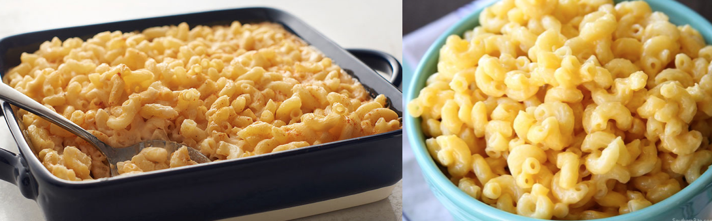

Vegan alternative to a cheesey classicMac and Cheese

Serves 4 peopleDairy mac and cheese
Ingredients:
2 tbsp butter
350g pasta
350g pasta
1 garlic glove
3 tbsp plain flour
500 ml milk
250g cheddar
50g parmesan
Method:
Heat oven to 200C/fan 180C/gas 6
Boil the pasta for 2 minutes less than stated on the pack and drain.
Melt the butter in a saucepan, and add the garlic for a minute before adding the flour and continue to stir
Cook for 2 minutes then gradually whisk in the milk until the sauce it lump-free. Simmer for 5 minutes, whisking the whole time until thickened.
Take off the heat and stir in the cheddar and 25g of the parmesan.
Stir in the pasta and tip into an ovenproof dish, then scatter over the rest of the parmesan and place in the oven for 20 minutes until crisp and golden.
Makes 4 burgersVegan Mac and Cheese
Ingredients:
160g raw cashews
200g carrots, peeled and cut into 1cm cubes
700g potatoes, peeled and cut into 1cm cubes
60ml olive oil
40g nutritional yeast
1 Juice of a Lemon
4 garlic cloves, peeled and roughly chopped
1 tbsp Dijon mustard
1 tbsp white wine vinegar
1 tsp cayenne pepper
400g pasta
3 tbsp panko breadcrumbs
Method:
The night before, soak the cashew nuts in water and leave overnight.
Heat the oven to 180C/160C fan/gas 4.
Cook the macaroni for 1 minute less than stated on the packaging
Steam the carrots and potatoes together for 5 mins, until completely softened.
In the food processor, add the drained cashews, carrots, potatoes and the oil, then blitz to break down the nuts.
Then add the rest of the ingredients – apart from the macaroni, breadcrumbs and the remaining oil – then blitz again until the mixture is smooth and season well. Add a splash of water and just a drizzle of olive oil if it looks too stiff, then set aside.
Stir the macaroni through the sauce and transfer to an ovenproof dish. Scatter the breadcrumbs over the top and bake for 20-25 minutes, until hot and crispy.